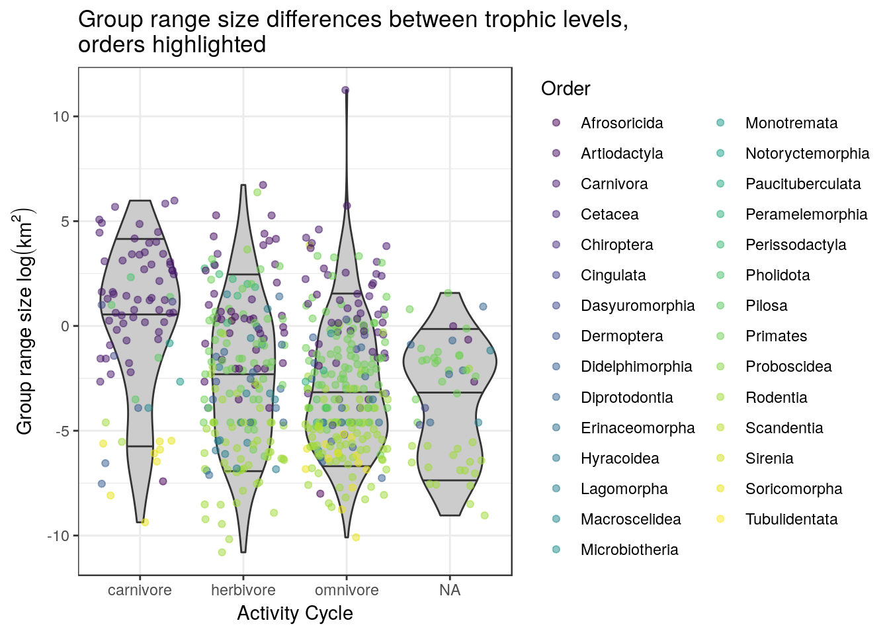
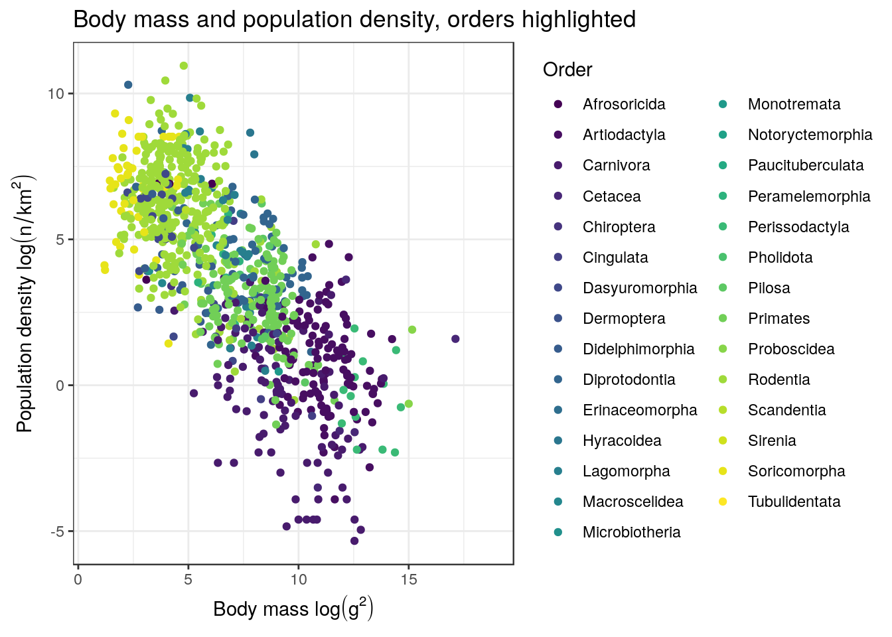
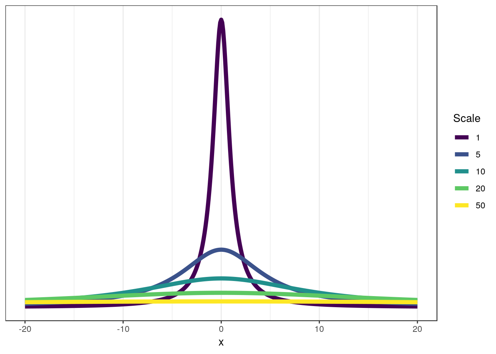
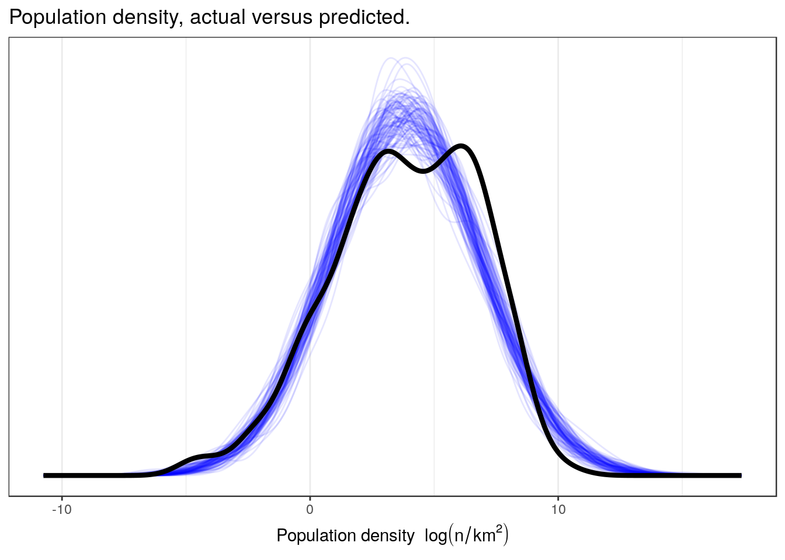
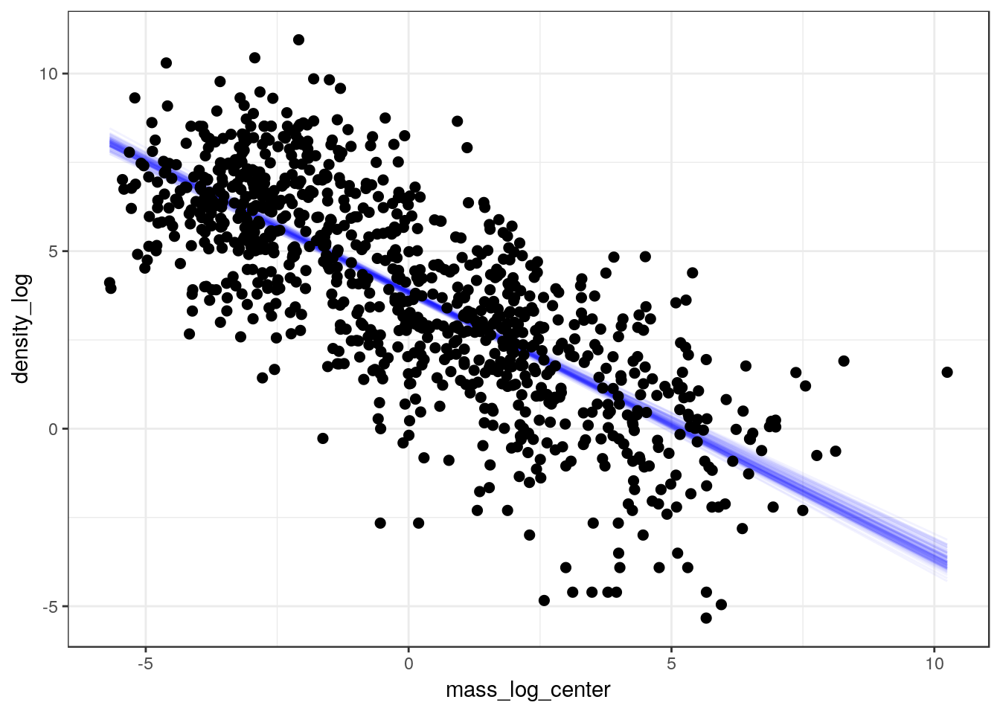
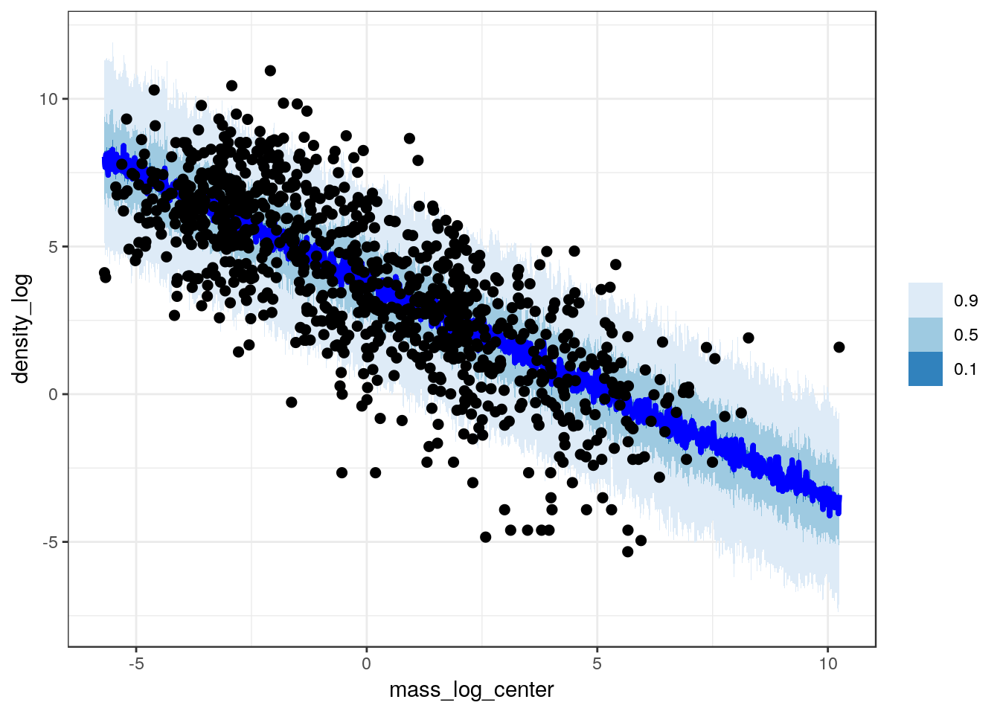
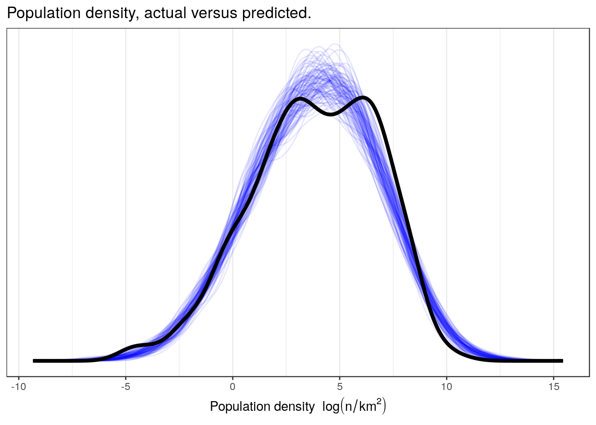
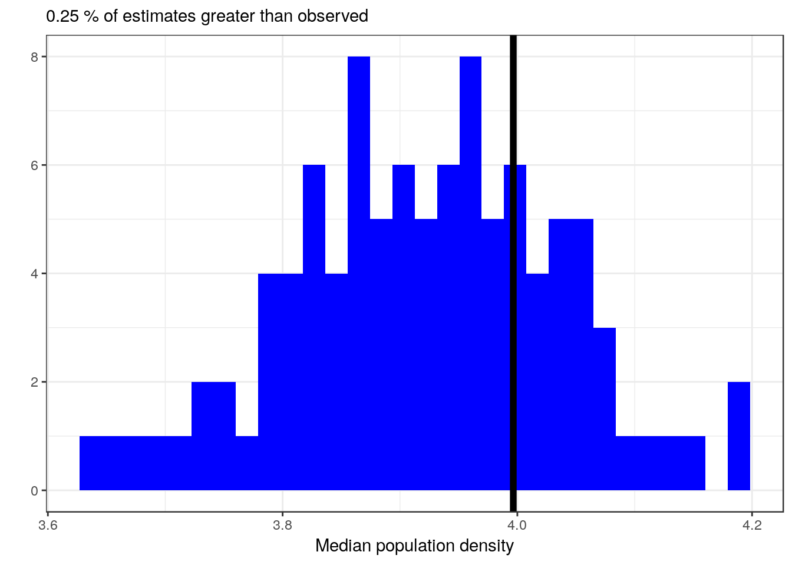
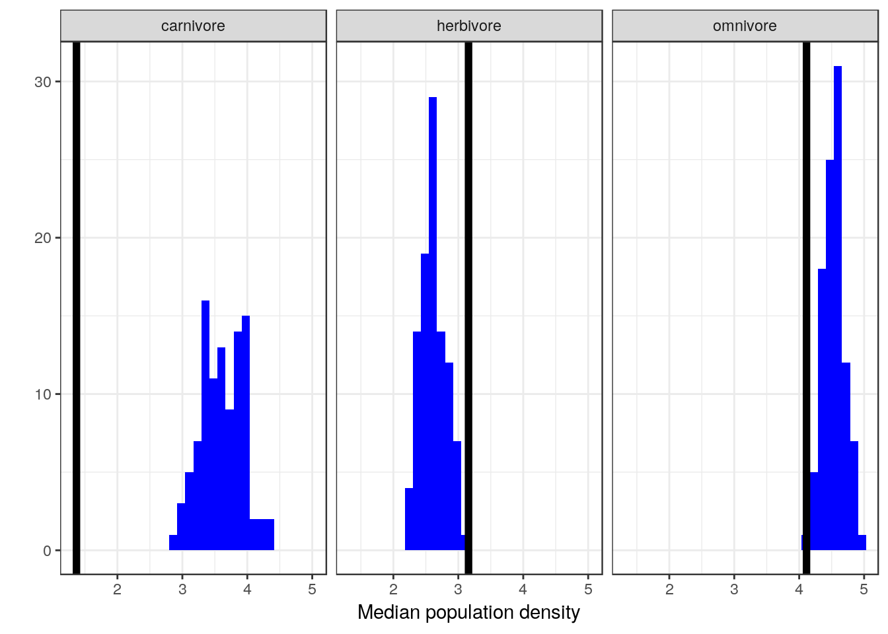
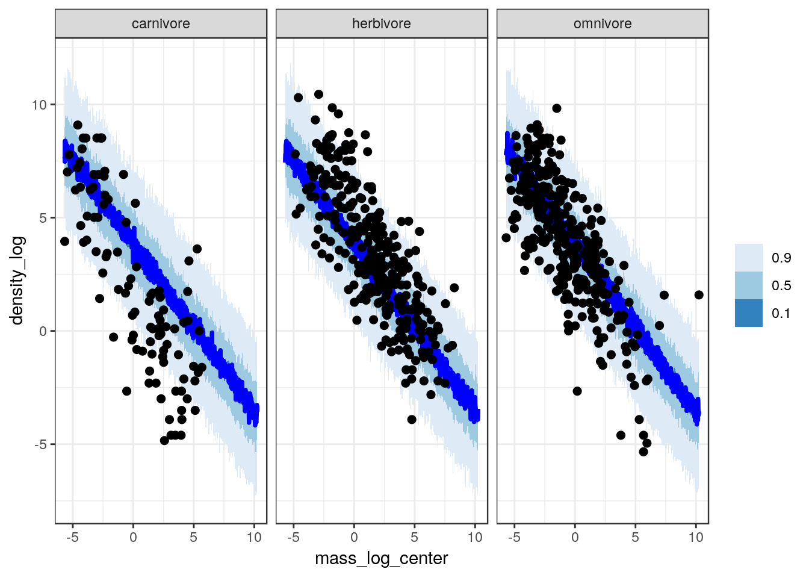

4 Continuing with regression with continuous predictors
4.1 Objectives
In a previous lesson we introduced linear regression with a single, binary predictor. This lesson expands on that initial introduction by introducing and explaining continuous predictors. Along the way I will continue to emphasize checking the quality or adequacy of model fit as an important part of both understanding our model and improving out model.
- Including a continuous predictor in a regression model.
- Learn to interpret continuous predictors.
- Continue to focus on evaluating model fit as major step in modeling.
library(pacman)
p_load(tidyverse, here, janitor, purrr, viridis, brms, tidybayes, bayesplot,
modelr, knitr, kableExtra)
theme_set(theme_bw())4.2 Reading
The following materials are recommended pre-readings before starting this tutorial.
- Chapter 4 “Linear Models” from Statistical Rethinking by Richard McElreath.
- OPTIONAL Chapter 3 “Linear regression: the basics” from Data Analysis Using Regression and Multilevel/Hierarchical Models by Gelman and Hill.
- OPTIONAL Chapter 4 “Linear regression: before and after fitting the model” from Data Analysis Using Regression and Multilevel/Hierarchical Models by Gelman and Hill.
4.3 Our first example
For this lesson we will be using fitting models to data from the PanTHERIA} database, a large collection of trait data for extant mammals. For a more detailed explanation of the dataset and each variable, you can review the data dictionary. A key detail to PanTHERIA is that missing data is coded as -999.00 and not as NA or blank cells. This knowledge is something we can use when importing our data so that it translates easily into the R environment. Also, a lot of the variables have terrible names with mixed unction, capital letters, and begin with numbers – all of these are very bad to program around and need to be dealt with (using the janitor package).
That all being said, let’s import the dataset, clean it up a bit, and then start visualizing it.
pantheria <- read_tsv(here('data', 'PanTHERIA_1-0_WR05_Aug2008.txt'),
na = '-999.00') %>%
clean_names() %>%
mutate(mass_log = log(x5_1_adult_body_mass_g),
range_group_log = log(x22_1_home_range_km2),
range_indiv_log = log(x22_2_home_range_indiv_km2),
density_log = log(x21_1_population_density_n_km2),
activity_cycle = case_when(x1_1_activity_cycle == 1 ~ 'nocturnal',
x1_1_activity_cycle == 2 ~ 'mixed',
x1_1_activity_cycle == 3 ~ 'diurnal'),
trophic_level = case_when(x6_2_trophic_level == 1 ~ 'herbivore',
x6_2_trophic_level == 2 ~ 'omnivore',
x6_2_trophic_level == 3 ~ 'carnivore'))## Parsed with column specification:
## cols(
## .default = col_double(),
## MSW05_Order = col_character(),
## MSW05_Family = col_character(),
## MSW05_Genus = col_character(),
## MSW05_Species = col_character(),
## MSW05_Binomial = col_character(),
## References = col_character()
## )## See spec(...) for full column specifications.pantheria %>%
drop_na(activity_cycle) %>%
ggplot(aes(x = trophic_level,
y = range_group_log)) +
geom_violin(fill = 'grey80',
draw_quantiles = c(0.1, 0.5, 0.9)) +
geom_jitter(height = 0,
alpha = 0.5,
mapping = aes(colour = msw05_order)) +
scale_colour_viridis(discrete = TRUE, name = 'Order') +
labs(x = 'Activity Cycle',
y = expression(paste('Group range size ', log(km^2))),
title = 'Group range size differences between trophic levels, \norders highlighted')## Warning: Removed 1079 rows containing non-finite values (stat_ydensity).## Warning: Removed 1079 rows containing missing values (geom_point).
pantheria %>%
ggplot(aes(x = mass_log, y = density_log, colour = msw05_order)) +
geom_point() +
scale_colour_viridis(discrete = TRUE, name = 'Order') +
labs(x = expression(paste('Body mass ', log(g^2))),
y = expression(paste('Population density ', log(n / km^2))),
title = 'Body mass and population density, orders highlighted')## Warning: Removed 4469 rows containing missing values (geom_point).
There are tons of ways we could deconstruct this dataset, some much more logical than others. For this tutorial, we’re going to focus on trying to understand how population density varies across mammals. There are tons of factors that can influence the population density of a species, so our process will be to slowly build up a model one predictor at a time.
Let’s begin our model in a similar fashion to our previous one, with an intercept-only model. We can then add our first continuous predictor from there.
Our response variable is density_log is a continuous value from \(-\infty\) to \(\infty\) so it is probably a good place to start by assuming it could be approximated with a normal distribution, as is common with linear regression. The normal distribution as defined in brms has two parameters: mean and standard deviation. For our simple intercept-only model, we do not need to expand on these parameters – after all, the intercept describes the average value or mean of the response.
Let’s write this out. Let \(y\) be density_log, \(\mu\) be the mean of density_log, and \(\sigma\) be the standard deviation of density_log.
\[ y \sim \text{Normal}(\mu, \sigma) \] Can you recall what all the of the parts of the above statement mean? What are we missing? Priors!
We can probably stick with pretty vague priors here – the mean is probably somewhere between -10 and 10 log(millimeters) and probably has at least that much range. Here’s my starting point. Could I improve it? Do we have enough data that it probably won’t matter?
\[ \begin{align} y &\sim \text{Normal}(\mu, \sigma) \\ \mu &\sim \text{Normal}(0, 10) \\ \sigma &\sim \text{Cauchy}^{+}(0, 10) \\ \end{align} \]
Something is new here – what is this Cauchy\(^{+}\) distribution? The Cauchy distribution is a thick-tailed probability distribution closely related to the Student t distribution. The Cauchy\(^{+}\) distribution is the half-Cauchy distribution – this means it is only defined for all positive real values (including 0.) You can think of this distribution as a weakly regularizing prior for standard deviations – most of the mass is concentrated towards low values and 0, but the heavy tail means there is non-zero probably of large values for \(\sigma\). The half-Cauchy distribution has two parameters: location and scale. The location is the middle of the full distribution and the scale describes the “width” of heaviness of the tails. For the half-Cauchy distribution the location parameter is mostly a formality as it defines the “backstop” of the distribution – that it is defined for values of 0 or greater.
Here is a quick visual of the Cauchy distribution’s behavior as you vary the scale. The half-Cauchy is just this distribution reflected about 0.
df <- tibble(x = seq(from = -20, to = 20, by = 0.1)) %>%
mutate(scale_1 = dcauchy(x, location = 0, scale = 1),
scale_5 = dcauchy(x, location = 0, scale = 5),
scale_10 = dcauchy(x, location = 0, scale = 10),
scale_20 = dcauchy(x, location = 0, scale = 20),
scale_50 = dcauchy(x, location = 0, scale = 50))
df %>%
gather(key = 'key', value = 'value', -x) %>%
separate(key, c('type', 'scale')) %>%
mutate(scale = factor(scale, levels = sort(order(scale)))) %>%
ggplot(aes(x = x, y = value, colour = scale)) +
geom_line(size = 2) +
scale_y_continuous(NULL, breaks = NULL) +
scale_colour_viridis(discrete = TRUE) +
labs(colour = 'Scale') +
NULL
As you can see, at scales of 20 or greater the Cauchy really begins to resemble the uniform distribution but with a bump in density around 0.
Let’s implement our intercept-only model in brms. We are going to need to ignore species that have missing data for density_log – something brms() can do automatically. Is getting rid of all this data ideal? Let’s assume it has no effect on our results for now, but if you are interested in learning more about handling missing values in our models, look up data imputation – this is an advanced topic we will not be covering in these introductory lessons. So, first we need to filter our data to just those observations with population density values. Then we can fit our model.
pantheria <-
pantheria %>%
drop_na(density_log)
m_1 <-
pantheria %>%
brm(data = .,
family = gaussian(),
formula = bf(density_log ~ 1),
prior = c(prior(normal(0, 10), class = Intercept),
prior(cauchy(0, 5), class = sigma)),
iter = 2000,
warmup = 1000,
chains = 4,
cores = 4,
refresh = 0)print(m_1)## Family: gaussian
## Links: mu = identity; sigma = identity
## Formula: density_log ~ 1
## Data: . (Number of observations: 956)
## Samples: 4 chains, each with iter = 2000; warmup = 1000; thin = 1;
## total post-warmup samples = 4000
##
## Population-Level Effects:
## Estimate Est.Error l-95% CI u-95% CI Eff.Sample Rhat
## Intercept 3.86 0.10 3.67 4.05 2969 1.00
##
## Family Specific Parameters:
## Estimate Est.Error l-95% CI u-95% CI Eff.Sample Rhat
## sigma 2.97 0.07 2.83 3.10 2701 1.00
##
## Samples were drawn using sampling(NUTS). For each parameter, Eff.Sample
## is a crude measure of effective sample size, and Rhat is the potential
## scale reduction factor on split chains (at convergence, Rhat = 1).As with any model, we should see how well it describes our data – maybe this simple model does a good enough job?
Let’s compare our observed distribution of population densities versus our posterior predictive distribution.
pantheria %>%
add_predicted_draws(model = m_1,
n = 100) %>%
ungroup() %>%
ggplot(aes(x = .prediction, group = .draw)) +
geom_line(stat = 'density',
alpha = 0.1,
colour = 'blue') +
geom_line(stat = 'density',
data = pantheria,
mapping = aes(x = density_log,
group = NULL),
colour = 'black',
size = 1.5) +
scale_y_continuous(NULL, breaks = NULL) +
labs(x = expression(paste('Population density ', log(n / km^2))),
title = 'Population density, actual versus predicted.') +
NULL
While we might be describing the overall mean and standard deviation of our data, I do not think our simple model is capable of capturing the a lot of the complexity in our data. Our data appears to be multimodal and has a very different spread, especially on the right-hand side. We are going to have to include more information we if want to better describe our data.
4.4 A single continuous predictor
Just like in our previous lesson, to improve our model we’re going to add a single predictor. What’s new to this lesson is that that predictor is a continuous variable: average individual mass in log grams or mass_log.
In linear regression, our predictors tend to describe change in mean \(y\) has a function of an intercept, one or more regression coefficients, and one or more predictor.
To do this, we need to define \(\mu\) as a function of our predictor. Do you remember from last lesson how we did this? Try writing out a model definition by hand.
First, let’s define \(x\) as mass_log. Also, let’s define two more variables: let \(\alpha\) be the intercept of our regression, and let \(\beta\) be the regression coefficient for \(x\). Given this new information, here is how we can write out our regression model. \[
\begin{align}
y_{i} &\sim \text{Normal}(\mu_{i}, \sigma) \\
\mu_{i} &= \alpha + \beta x_{i} \\
\alpha &\sim \text{Normal}(0, 10) \\
\beta &\sim \text{Normal}(-1, 5) \\
\sigma &\sim \text{Cauchy}^{+}(0, 5) \\
\end{align}
\]
Are the choice of priors reasonable? Take a closer look at the prior for \(\beta\) – this is a weakly informative prior. I’m guessing that the slope is probably negative, but allow for the possibility of a 0 or positive slope – albeit less than that of a negative slope. Is this justified? Think of the physical definition of the variables – what would you guess the relationship between body size and population density to be?
You might notice this model is functionally identical to the model from our previous lesson where we had only a single binary predictor. The difference is all on the data end, and not the model, as \(x\) can take on any value and not just 0 and 1.
How do we interpret all of these parameters? Our previous lesson gave us all the information we needed to describe each parameter, but I will reiterate them here because this is really important. If we don’t know what our parameters precisely mean, we cannot interpret them.
- \(\mu\) average value of \(y\)
- \(\sigma\) standard deviation of \(y\)
- \(\alpha\) intercept, average value of \(y\) when \(x\) = 0
- \(\beta\) slope, expected change in \(y\) per unit change in \(x\)
Let’s implement this model in brms. Like before, we are going to ignore species that have missing data for either density_log or mass_log – brms() can do this for us automatically, but let’s do it by hand here again. So, our first set is filter down the pantheria tibble again and then fit our new model. We’ve already dropped all observations missing density values, so we just need to do the same for mass values. Conveniently, there is no harm in checking for missing density_log values again so that everything is clear.
pantheria <-
pantheria %>%
drop_na(density_log, mass_log)
m_2 <-
pantheria %>%
brm(data = .,
family = gaussian(),
formula = bf(density_log ~ 1 + mass_log),
prior = c(prior(normal(0, 10), class = Intercept),
prior(normal(-1, 10), class = b),
prior(cauchy(0, 5), class = sigma)),
iter = 2000,
warmup = 1000,
chains = 4,
cores = 4,
refresh = 0)print(m_2)## Family: gaussian
## Links: mu = identity; sigma = identity
## Formula: density_log ~ 1 + mass_log
## Data: . (Number of observations: 947)
## Samples: 4 chains, each with iter = 2000; warmup = 1000; thin = 1;
## total post-warmup samples = 4000
##
## Population-Level Effects:
## Estimate Est.Error l-95% CI u-95% CI Eff.Sample Rhat
## Intercept 8.94 0.16 8.63 9.25 4248 1.00
## mass_log -0.74 0.02 -0.78 -0.70 4051 1.00
##
## Family Specific Parameters:
## Estimate Est.Error l-95% CI u-95% CI Eff.Sample Rhat
## sigma 1.95 0.04 1.86 2.03 4715 1.00
##
## Samples were drawn using sampling(NUTS). For each parameter, Eff.Sample
## is a crude measure of effective sample size, and Rhat is the potential
## scale reduction factor on split chains (at convergence, Rhat = 1).4.4.1 Aside: Centering
The intercept of a linear regression model is normally interpreted as the average value of \(y\) when all predictors equal 0. A consequence of this definition means that the value of the intercept is frequently uninterpretable without also studying the regression coefficients. This is also the reason that we commonly need very weak priors for intercepts.
A trick for improving our interpretation of the intercept \(\alpha\) is centering our (continuous) predictors. Centering is the procedure of subtracting the mean of a variable from each value. Namely:
pantheria <-
pantheria %>%
mutate(mass_log_center = mass_log - mean(mass_log))\(\alpha\) is still the expected value of the outcome variable when the predictor is equal to zero. But now the mean value of the predictor is also zero. So the intercept now means: the expected value of the outcome, when the predictor is at its average value. This makes interpreting the intercept a lot easier.
To illustrate this, let’s refit the model with the newly centered data.
m_3 <-
pantheria %>%
brm(data = .,
family = gaussian(),
formula = bf(density_log ~ 1 + mass_log_center),
prior = c(prior(normal(0, 10), class = Intercept),
prior(normal(1, 5), class = b),
prior(cauchy(0, 5), class = sigma)),
iter = 2000,
warmup = 1000,
chains = 4,
cores = 4,
refresh = 0)print(m_3)## Family: gaussian
## Links: mu = identity; sigma = identity
## Formula: density_log ~ 1 + mass_log_center
## Data: . (Number of observations: 947)
## Samples: 4 chains, each with iter = 2000; warmup = 1000; thin = 1;
## total post-warmup samples = 4000
##
## Population-Level Effects:
## Estimate Est.Error l-95% CI u-95% CI Eff.Sample Rhat
## Intercept 3.85 0.06 3.72 3.97 4372 1.00
## mass_log_center -0.74 0.02 -0.78 -0.70 3917 1.00
##
## Family Specific Parameters:
## Estimate Est.Error l-95% CI u-95% CI Eff.Sample Rhat
## sigma 1.95 0.04 1.86 2.03 3656 1.00
##
## Samples were drawn using sampling(NUTS). For each parameter, Eff.Sample
## is a crude measure of effective sample size, and Rhat is the potential
## scale reduction factor on split chains (at convergence, Rhat = 1).Can you explain why centering changes the value of \(\alpha\) but not \(\beta\)?
Centering will not change our models posterior predictive performance, but really improves the interpretability of our model parameters. Centering can also be beneficial for estimating parameter values by decreasing posterior correlation among the parameters.
I recommend always centering your (continuous) predictors.
4.4.2 Checking model fit
Now let’s see how much adding this predictor improves our ability to describe \(y\). We can also visualize our data as a scatter plot with the linear predictor overlain to demonstrate our model estimates of mean population density as a function of species mass.
pantheria %>%
add_fitted_draws(model = m_3,
n = 100) %>%
ungroup() %>%
ggplot(aes(x = mass_log_center, y = density_log)) +
geom_line(mapping = aes(y = .value, group = .draw),
alpha = 1 / 20,
colour = 'blue') +
geom_point(data = pantheria, size = 2) +
scale_fill_brewer()
The previous plot only covers our model’s estimates for mean population density but this is not all our model is telling us. As with our earlier posterior predictive comparisons from the intercept-only model, we can use the full posterior predictive distribution to compare our observed data to 100 datasets drawn from the posterior predictive distribution. Because the posterior predictive distribution also takes into account the estimated scale of our data (\(\sigma\)) and thus estimates individual values of \(y\) and not just the expected value of \(y\), these types of comparisons give us a fuller appreciation of how well our model is or is not representing out data.
pantheria %>%
data_grid(mass_log_center = seq_range(mass_log_center, n = 1000)) %>%
add_predicted_draws(model = m_3,
n = 100) %>%
ungroup() %>%
ggplot(aes(x = mass_log_center, y = density_log)) +
stat_lineribbon(mapping = aes(y = .prediction),
.width = c(0.9, 0.5, 0.1),
colour = 'blue') +
geom_point(data = pantheria, size = 2) +
scale_fill_brewer() +
NULL
We can also do explicit posterior predictive tests to see how well our model captures specific parts of our data such as the overall density, the median, or differences between unmodeled classes. For our first posterior predictive test, let’s do a comparison between the density of our data, \(y\), and the densities of 100 simulated datasets drawn from our posterior predictive distribution, \(y^{\tilde}\).
pantheria %>%
add_predicted_draws(model = m_3,
n = 100) %>%
ungroup() %>%
ggplot(aes(x = .prediction, group = .draw)) +
geom_line(stat = 'density',
alpha = 0.1,
colour = 'blue') +
geom_line(stat = 'density',
data = pantheria,
mapping = aes(x = density_log,
group = NULL),
colour = 'black',
size = 1.5) +
scale_y_continuous(NULL, breaks = NULL) +
labs(x = expression(paste('Population density ', log(n / km^2))),
title = 'Population density, actual versus predicted.') +
NULL
Let’s then see how well our model reproduces the median population density even though our model is defined for the mean of population density.
pantheria_summary <-
pantheria %>%
dplyr::summarize(median = median(density_log)) %>%
pull()
pantheria_summary_ppc <-
pantheria %>%
add_predicted_draws(model = m_3,
n = 100) %>%
ungroup() %>%
group_by(.draw) %>%
dplyr::summarize(density_median_ppc = median(.prediction))
med_ppc <-
pantheria_summary_ppc %>%
dplyr::summarize(per = sum(density_median_ppc > pantheria_summary) / n()) %>%
pull()
pantheria_summary_ppc %>%
ggplot(aes(x = density_median_ppc)) +
geom_histogram(fill = 'blue') +
geom_vline(xintercept = pantheria_summary, size = 2) +
labs(subtitle = paste(med_ppc, '% of estimates greater than observed'),
x = 'Median population density', y = '')## `stat_bin()` using `bins = 30`. Pick better value with `binwidth`.
Let’s see if our model can reproduce the differences in population density between trophic levels even though that information was not included in our model. This requires us dropping a bit more of our data because trophic level is not assigned for as many species as density or body mass.
pan_cut <-
pantheria %>%
drop_na(density_log, mass_log_center, trophic_level)
pan_trophic_summary <-
pan_cut %>%
group_by(trophic_level) %>%
dplyr::summarize(median = median(density_log))
pan_trophic_summary_ppc <-
pan_cut %>%
add_predicted_draws(model = m_3,
n = 100) %>%
ungroup() %>%
group_by(.draw, trophic_level) %>%
dplyr::summarize(density_median_ppc = median(.prediction))
pan_trophic_summary_ppc %>%
ggplot(aes(x = density_median_ppc)) +
geom_histogram(fill = 'blue') +
geom_vline(data = pan_trophic_summary,
mapping = aes(xintercept = median),
size = 2) +
facet_wrap(~ trophic_level) +
labs(x = 'Median population density', y = '') +
NULL## `stat_bin()` using `bins = 30`. Pick better value with `binwidth`.
Or we can even look at how well our posterior predictive distribution does across the different trophic levels, even though those are not encoded in the model.
pan_cut <-
pantheria %>%
drop_na(density_log, mass_log_center, trophic_level)
pan_cut %>%
data_grid(mass_log_center = seq_range(mass_log_center, n = 1000),
trophic_level) %>%
add_predicted_draws(model = m_3,
n = 100) %>%
ungroup() %>%
ggplot(aes(x = mass_log_center, y = density_log)) +
stat_lineribbon(mapping = aes(y = .prediction),
.width = c(0.9, 0.5, 0.1),
colour = 'blue') +
geom_point(data = pan_cut, size = 2) +
scale_fill_brewer() +
facet_wrap(~ trophic_level) +
NULL
While our model does an okay job at predicting median population density of omnivores and herbivores, it is very bad at estimating the population density of carnivores.
Given all of the above plots, in particular the failure of our model to capture the differences between the (unmodeled) trophic levels, it appears that while this model does slightly better job at approximating our data than our earlier model it still fails are adequately representing our data. Even though we did not model the differences between the trophic groups, by seeing if our model captures these differences we get a better idea about how we might improve our model. In this case, because we know that while there are differences between trophic groups, these differences are not captured by the model. If we want to make sure we are describing the different sources of variation, we might want to include the tropic levels as additional predictors on top of body size.
But what is this about adding more predictors? What does that mean? That is the subject of our next lesson.
4.5 Summary
In this lesson we introduced continuous predictors in linear regression. We also covered a lot of examples of how to inspect your model’s adequacy at describing our data. This process involved checking our model’s ability to represent unmodeled variation in the data that we know about but that our model does not. Our next step will be including these previously unmodeled factors in a new expanded model. In our next lesson we will cover multivariate models, or models with more than one predictor (e.g body mass AND trophic level).